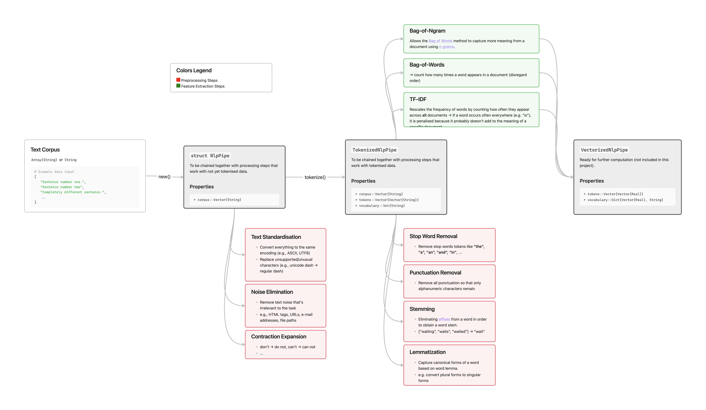

PreprocessingPipelineJuML


PreprocessingPipelineJuML is a Julia package for preprocessing text data in NLP pipelines.
Features
- Text preprocessing: prepare textual data for machine learning tasks. Preprocessing steps include:
- applied before Tokenization:
- expansion of contractions
- masking of numbers
- noise removal (punctuation, special characters, phone numbers, e-mail addresses, ...)
- text standardization (handle encoding & lowercasing)
- applied after Tokenization:
- stopword removal
- stemming
- applied before Tokenization:
- Tokenization: Split text into words or characters.
- Vectorization: Transform text into machine-learning-compatible vector representations
- one-hot encoding
- Bag of Words (BoW)
- Bag of N-Grams
- Term Frequency-Inverse Document Frequency (TF-IDF)
API Structure
The package provides a set of pipeline stages that can be chained together to preprocess text data. The pipeline stages are implemented as functions that take a NlpPipe or TokenizedNlpPipe struct as input and return a modified object of the same type. This makes it easy to build custom preprocessing pipelines by piping together the desired stages.
Usage Example:
corpus = ["Hello, world!", "How are you?"]
pipe = NlpPipe(corpus) |> remove_noise |> tokenize |> one_hot_encoding
# Output: VectorizedNlpPipe with one-hot encoded tokensPipe Objects:
NlpPipe First struct to instantiate in a pipeline. Can be created directly from a text corpus. Can be
- used in preprocessing stages that do not require the text to be tokenized.
- transformed into a
TokenizedNlpPipeby applying thetokenizefunction.
TokenizedNlpPipe Struct that holds tokenized text data. Can be used for preprocessing stages that require tokenized text (e.g., stopword removal, stemming, etc.). Can be transformed into a VectorizedNlpPipe by applying any vectorization function.
VectorizedNlpPipe Struct that holds vectorized text data (embeddings). Can be used for machine learning tasks.

Preprocessing_Pipeline_JuML.NlpPipe — TypeNlpPipeA simple pipeline structure for handling text data (corpus) and corresponding labels.
Fields
corpus::Vector{String}: A collection of text documents.labels::Union{Vector{String}, Nothing}: Optional labels corresponding to each document incorpus.
Constructors
NlpPipe(corpus::Vector{String}, labels::Union{Vector{String}, Nothing})Creates anNlpPipeinstance with a given corpus and optional labels. Throws anArgumentErrorif the number of documents and labels do not match.NlpPipe(corpus::Vector{String})Creates anNlpPipeinstance with only a corpus, settinglabelstonothing.NlpPipe(corpus::String)Creates anNlpPipeinstance with a single document, storing it in a vector.NlpPipe(previousPipe::NlpPipe; corpus::Vector{String} = previousPipe.corpus, labels::Union{Vector{String}, Nothing} = previousPipe.labels)Creates a newNlpPipeinstance based on an existing one, optionally overridingcorpusandlabels. Throws anArgumentErroriflabelsis notnothingand its length does not match the corpus length.
Example Usage
Creating a pipe from a corpus with multiple documents, inclusing labels
julia> pipe1 = NlpPipe(["document1", "document2"], ["label1", "label2"])
NlpPipe(["document1", "document2"], ["label1", "label2"])Creating a pipe from a corpus without labels
julia> pipe2 = NlpPipe(["document3"])
NlpPipe(["document3"], nothing)Creating a pipe from a single string corpus
julia> pipe3 = NlpPipe("single document")
NlpPipe(["single document"], nothing)Creating a new pipe from an existing one with modified corpus and labels
julia> NlpPipe(pipe1, corpus=["new_doc1", "new_doc2"])
NlpPipe(["new_doc1", "new_doc2"], ["label1", "label2"])Preprocessing_Pipeline_JuML.TokenizedNlpPipe — TypeTokenizedNlpPipeA structure for handling tokenized text data, maintaining a vocabulary and optional labels.
Fields
corpus::Vector{String}: A collection of original text documents.tokens::Vector{Vector{String}}: Tokenized representation of each document incorpus.vocabulary::Set{String}: A set of unique tokens derived fromtokens.labels::Union{Vector{String}, Nothing}: Optional labels corresponding to each document.
Constructors
TokenizedNlpPipe(corpus::Vector{String}, tokens::Vector{Vector{String}}, labels::Union{Vector{String}, Nothing})Creates aTokenizedNlpPipeinstance with a given corpus, tokenized documents, and optional labels. The vocabulary is automatically generated fromtokens.TokenizedNlpPipe(previousPipe::TokenizedNlpPipe; tokens::Vector{Vector{String}} = previousPipe.tokens, vocabulary::Set{String} = previousPipe.vocabulary, labels::Union{Vector{String}, Nothing} = previousPipe.labels)Creates a newTokenizedNlpPipeinstance based on an existing one, allowing modifications to tokens, vocabulary, and labels while retaining the original corpus.
Example Usage
Creating a pipe from an NlpPipe instance (usual way to do it)
julia> corpus = ["Hello world", "Julia is great"]
2-element Vector{String}:
"Hello world"
"Julia is great"
julia> tokenizedPipe = NlpPipe(corpus) |> tokenize
TokenizedNlpPipe(["Hello world", "Julia is great"], [["Hello", "world"], ["Julia", "is", "great"]], Set(["great", "Hello", "is", "Julia", "world"]), nothing)Creating a new pipe from scratch
julia> corpus = ["Hello world", "Julia is great"]
2-element Vector{String}:
"Hello world"
"Julia is great"
julia> tokens = [["Hello", "world"], ["Julia", "is", "great"]]
2-element Vector{Vector{String}}:
["Hello", "world"]
["Julia", "is", "great"]
julia> TokenizedNlpPipe(corpus, tokens, ["greeting", "statement"])
TokenizedNlpPipe(["Hello world", "Julia is great"], [["Hello", "world"], ["Julia", "is", "great"]], Set(["great", "Hello", "is", "Julia", "world"]), ["greeting", "statement"])Creating a new pipe from an existing one with modified tokens
julia> pipe1 = TokenizedNlpPipe(corpus, tokens, ["greeting", "statement"])
TokenizedNlpPipe(["Hello world", "Julia is great"], [["Hello", "world"], ["Julia", "is", "great"]], Set(["great", "Hello", "is", "Julia", "world"]), ["greeting", "statement"])
julia> pipe2 = TokenizedNlpPipe(pipe1; tokens=[["Hello"], ["Julia", "is"]])
TokenizedNlpPipe(["Hello world", "Julia is great"], [["Hello"], ["Julia", "is"]], Set(["great", "Hello", "is", "Julia", "world"]), ["greeting", "statement"])Preprocessing_Pipeline_JuML.VectorizedNlpPipe — TypeVectorizedNlpPipeA structure for handling vectorized representations of tokenized text data, including a vocabulary mapping and optional labels.
Fields
tokens::Vector{Matrix{<:Union{Int, Float64}}}: A collection of numerical representations (e.g., embeddings, one-hot encodings) for tokenized text.vocabulary::Dict{String, Int}: A dictionary mapping words to unique integer indices.labels::Union{Vector{String}, Nothing}: Optional labels corresponding to each document.
Example Usage
Creating a pipe from an existing TokenizedNlpPipe instance (usual way to do it)
julia> corpus = ["Hello world", "Julia is great"]
2-element Vector{String}:
"Hello world"
"Julia is great"
julia> NlpPipe(corpus) |> tokenize |> one_hot_encoding # (or any other vectorization method)
VectorizedNlpPipe(Matrix{<:Union{Float64, Int64}}[[0 1 … 0 0; 0 0 … 0 1], [0 0 … 1 0; 0 0 … 0 0; 1 0 … 0 0]], Dict("great" => 1, "Hello" => 2, "is" => 3, "Julia" => 4, "world" => 5), nothing)Creating a pipe from scratch
julia> tokens = [[1 2; 3 4], [5 6; 7 8]] # Example word embeddings (each document is a matrix)
2-element Vector{Matrix{Int64}}:
[1 2; 3 4]
[5 6; 7 8]
julia> vocab = Dict("hello" => 1, "world" => 2, "Julia" => 3)
Dict{String, Int64} with 3 entries:
"hello" => 1
"Julia" => 3
"world" => 2
julia> labels = ["greeting", "statement"]
2-element Vector{String}:
"greeting"
"statement"
julia> VectorizedNlpPipe(tokens, vocab, labels)
VectorizedNlpPipe(Matrix{<:Union{Float64, Int64}}[[1 2; 3 4], [5 6; 7 8]], Dict("hello" => 1, "Julia" => 3, "world" => 2), ["greeting", "statement"])Preprocessing_Pipeline_JuML.bag_of_ngrams — Methodbag_of_ngrams(pipe::TokenizedNlpPipe; n::Int = 1) -> VectorizedNlpPipeCreate a bag of n-grams out of given TokenizedNlpPipe, with padding for shorter documents.
Arguments:
pipe::TokenizedNlpPipe: The inputTokenizedNlpPipeobject containing the tokenized documents.n::Int: The n-gram size. Defaults to 1.
Returns:
VectorizedNlpPipe: A newVectorizedNlpPipeobject with the n-gram vectors.
Usage Example:
julia> NlpPipe(["words one", "words two"]) |> tokenize |> bag_of_ngrams
VectorizedNlpPipe(Matrix{<:Union{Float64, Int64}}[[1 0 0; 0 1 0], [1 0 0; 0 0 1]], Dict("two" => 3, "one" => 2, "words" => 1), nothing)Preprocessing_Pipeline_JuML.bag_of_words — Methodbag_of_words(pipe::TokenizedNlpPipe) -> VectorizedNlpPipeCreate a bag-of-words-encoding out of given TokenizedNlpPipe
Arguments:
pipe::TokenizedNlpPipe: The inputTokenizedNlpPipeobject containing the tokenized documents.
Returns:
VectorizedNlpPipe: A newVectorizedNlpPipeobject with the bag-of-words vectors.
Examples:
julia> NlpPipe(["words one", "words two"]) |> tokenize |> bag_of_words
VectorizedNlpPipe(Matrix{<:Union{Float64, Int64}}[[0 1 1], [1 0 1]], Dict("two" => 1, "one" => 2, "words" => 3), nothing)Preprocessing_Pipeline_JuML.create_n_gram_dict — Methodcreate_n_gram_dict(pipe, n)Create a dictionary of ngrams out of given TokenizedNlpPipe.
Examples:
julia> pipe = TokenizedNlpPipe([["one", "sentence", "sample"],["two", "sentence", "sample"]])
julia> create_n_gram_dict(pipe, 2)
Dict("two sentence" => 2, "sentence sample" => 3, "one sentence" => 1)Preprocessing_Pipeline_JuML.expand_contractions — Methodexpand_contractions(input::NlpPipe) -> NlpPipeExpand contractions in the input text. This function expands common English contractions.
Arguments
- input::NlpPipe: A
NlpPipeobject containing the corpus to expand contractions in.
Returns
- output::NlpPipe: A new
NlpPipeobject with the contractions expanded in the corpus.
Usage Example
julia> NlpPipe(["I'm happy", "I've got a cat"]) |> expand_contractions
NlpPipe(["I am happy", "I have got a cat"], nothing)Preprocessing_Pipeline_JuML.mask_numbers — Methodmask_numbers(pipe::NlpPipe; replace_with::String="<NUM>") -> NlpPipeReplaces all numbers in the text of the given NlpPipe corpus with a specified string.
Arguments
pipe::NlpPipe: The inputNlpPipeobject containing the corpus to be processed.replace_with::String: The string to replace numbers with. Defaults to "<NUM>".
Returns
NlpPipe: A newNlpPipeobject with the numbers in the corpus replaced by the specified string.
Example
julia> NlpPipe(["The price is 1000€."]) |> mask_numbers
NlpPipe(["The price is <NUM>€."], nothing)Preprocessing_Pipeline_JuML.one_hot_encoding — Methodone_hot_encoding(pipe::TokenizedNlpPipe) -> VectorizedNlpPipeCreate a one-hot-encoding out of given TokenizedNlpPipe
Arguments:
pipe::TokenizedNlpPipe: The inputTokenizedNlpPipeobject containing the tokenized documents.
Returns:
VectorizedNlpPipe: The outputVectorizedNlpPipeobject containing the one-hot-encoded documents.
Examples:
julia> NlpPipe(["words one", "words two"]) |> tokenize |> one_hot_encoding
VectorizedNlpPipe(Matrix{<:Union{Float64, Int64}}[[0 0 1; 0 1 0], [0 0 1; 1 0 0]], Dict("two" => 1, "one" => 2, "words" => 3), nothing)Preprocessing_Pipeline_JuML.remove_noise — Methodremove_noise(pipe::NlpPipe) -> NlpPipeRemoves noise from the corpus. Noise includes HTML tags, URLs, email addresses, file paths, special characters, dates & times.
Arguments
- pipe::NlpPipe: The
NlpPipeobject with a corpus to remove noise from
Returns
- A new
NlpPipeobject with the noise removed from the corpus
Usage Examples
julia> NlpPipe(["<html>This is a test</html>"]) |> remove_noise
NlpPipe(["This is a test"], nothing)With custom replacement patterns
julia> NlpPipe(["<html>This is a test</html>"]) |> pipe -> remove_noise(pipe, replacement_patterns=[r"is a" => "🦖🫶"])
NlpPipe(["<html>This 🦖🫶 test</html>"], nothing)Preprocessing_Pipeline_JuML.remove_stop_words — Methodremove_stop_words(pipe::TokenizedNlpPipe; language::String="en", stop_words::Set{String}=Set{String}()) -> TokenizedNlpPipeRemoves predefined stopwords. You can access the stop words for a given language using the language name or ISO 639 code. For example, to get the stop words for English, you can use stopwords["eng"], stopwords["en"], or stopwords["English"].
Stop words sourced from https://github.com/guo-yong-zhi/StopWords.jl/blob/main/README.md.
Parameters
- pipe: TokenizedNlpPipe
- language: String = "en"
- stop_words: Set{String} = Set{String}()
Returns
- A new
TokenizedNlpPipestruct with the stop words removed from the tokens.
Examples
Removing stop words from a tokenized pipe (default stop words)
julia> NlpPipe(["This is a dinosaur"]) |> tokenize |> remove_stop_words |> pipe -> pipe.tokens
1-element Vector{Vector{String}}:
["This", "dinosaur"]Using custom stop words
julia> NlpPipe(["This is a dinosaur"]) |> tokenize |> pipe -> remove_stop_words(pipe, stop_words=Set(["This", "dinosaur"])) |> pipe -> pipe.tokens
1-element Vector{Vector{String}}:
["is", "a"]Preprocessing_Pipeline_JuML.standardize_document — Methodstandardize_document(doc::String)::StringStandardizes a document by converting it to lowercase and replacing unusual characters with their standard counterparts.
Arguments
doc::String: The input document as a string.
Returns
String: The standardized document as a string.
Preprocessing_Pipeline_JuML.standardize_text — Methodstandardize_text(pipe::NlpPipe) -> NlpPipeApplies the standardize_document function to each document in the corpus of the given NlpPipe object.
Arguments
pipe::NlpPipe: AnNlpPipeobject containing a corpus and associated labels.
Returns
NlpPipe: A newNlpPipeobject with the standardized corpus and the original labels.
Usage Example
julia> NlpPipe(["Hello WORLD", "Julia is GREAT"]) |> standardize_text
NlpPipe(["hello world", "julia is great"], nothing)Preprocessing_Pipeline_JuML.tf_idf — Methodtf_idf(pipe::TokenizedNlpPipe; tf_weighting::String = "relative term frequency", idf_weighting::String="inverse document frequency") -> VectorizedNlpPipeCompute the TF-IDF (Term Frequency-Inverse Document Frequency) representation of the tokenized documents in the given pipe.
Arguments
pipe::TokenizedNlpPipe: A pipeline containing tokenized documents.tf_weighting::String: The term frequency weighting scheme. Options are "relative term frequency" (default) and "raw term frequency".idf_weighting::String: The inverse document frequency weighting scheme. Options are "inverse document frequency" (default) and "smooth inverse document frequency".
Returns
VectorizedNlpPipe: A new pipeline containing the TF-IDF vectorized representation of the documents.
Usage Examples
julia> NlpPipe(["words one", "words two"]) |> tokenize |> tf_idf
VectorizedNlpPipe(Matrix{<:Union{Float64, Int64}}[[0.0 0.0 0.0; 0.0 0.35 0.0], [0.0 0.0 0.0; 0.0 0.0 0.35]], Dict("two" => 3, "one" => 2, "words" => 1), nothing)Preprocessing_Pipeline_JuML.tokenize — Functiontokenize(pipe::NlpPipe, level::Symbol = :word) -> TokenizedNlpPipeTokenizes the documents in the corpus of the given NlpPipe object. The level parameter can be set to :word or :character.
Arguments
pipe::NlpPipe: AnNlpPipeobject containing a corpus of documents.level::Symbol: The tokenization level, either:word(default) or:character.
Returns
TokenizedNlpPipe: A newTokenizedNlpPipeobject with the tokenized documents.
Usage Example
julia> NlpPipe(["Hello world", "Julia is great"]) |> tokenize
TokenizedNlpPipe(["Hello world", "Julia is great"], [["Hello", "world"], ["Julia", "is", "great"]], Set(["great", "Hello", "is", "Julia", "world"]), nothing)